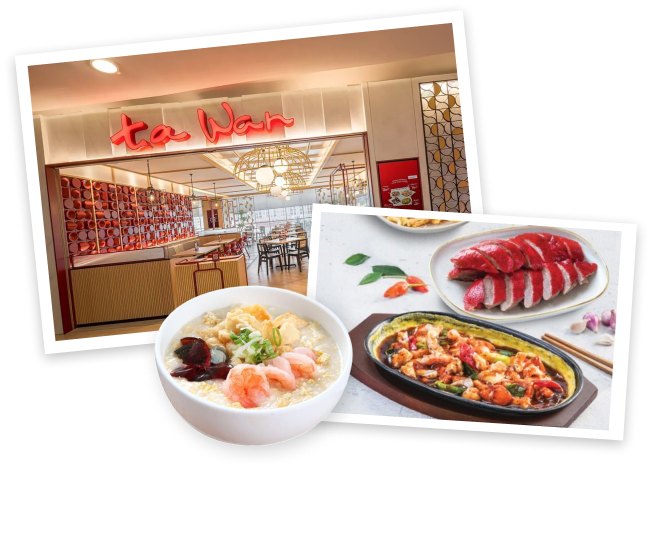
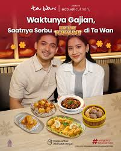
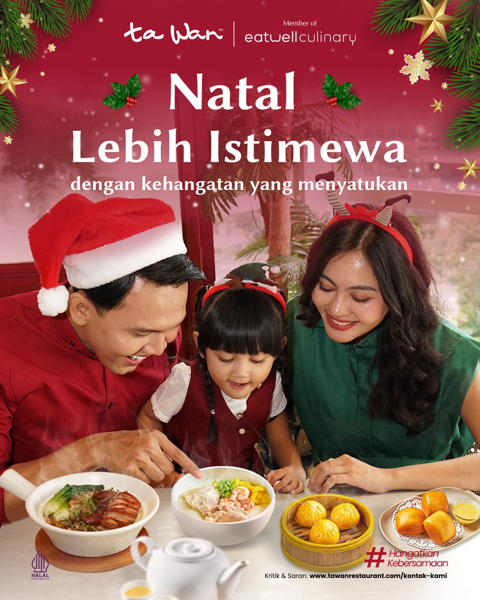
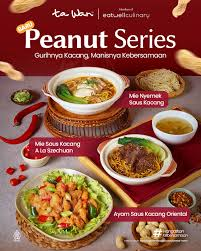

Menghadirkan Kehangatan di Setiap Kebersamaan
Berawal dari sebuah restoran bubur legendaris pada tahun 1996, Ta Wan telah berkembang pesat menjadi jaringan restoran Chinese food ternama bersertifikat Halal Grade A dengan lebih dari 90 outlet di Indonesia. Ta Wan menyajikan hidangan khas dengan citarasa yang mengingatkan kita pada kehangatan masakan rumah.
Tentang Kami →
Santapan Lezat yang Memberi Kenangan
Nikmati perpaduan klasik Chinese food yang menjadi primadona keluarga dari generasi ke generasi. Mulai dari kelembutan Bubur Spesial 3 Rasa, Mie Goreng Ulang Tahun, hingga hidangan Sapo Terong dan Seafood pilihan yang kaya bumbu.
Jelajahi Menu →
Kami Selalu Dekat Bersama Anda
Sebagai jaringan restoran Chinese food dengan jumlah outlet terbanyak di Indonesia, Anda selalu dapat menikmati momen bersantap hangat di berbagai pusat perbelanjaan terkemuka di kota Anda.
Lihat Lokasi Outlet →Berita & Promo Terbaru

Waktunya gajian, saatnya serbu Pay Day Fortune di Ta Wan dengan menu hemat berdua hingga berempat!

Momen Natal lebih istimewa dengan kehangatan rasa yang menyatukan seluruh keluarga tercinta.

Setiap suapan dari Peanut Series menghadirkan kehangatan tersendiri dengan gurihnya saus kacang istimewa.